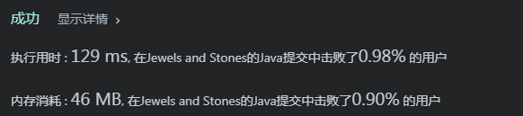
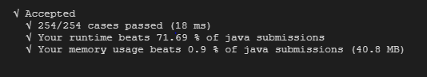
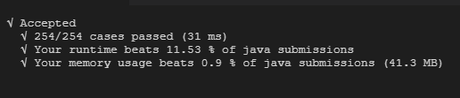
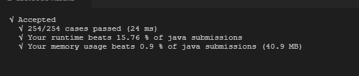
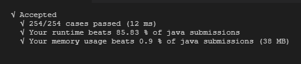
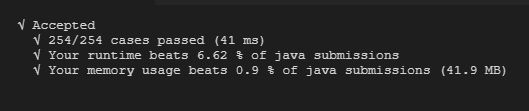

题目
给定字符串J 代表石头中宝石的类型，和字符串 S代表你拥有的石头。 S 中每个字符代表了一种你拥有的石头的类型，你想知道你拥有的石头中有多少是宝石。
J 中的字母不重复，J 和 S中的所有字符都是字母。字母区分大小写，因此"a"和"A"是不同类型的石头。
示例 1:
1 | 输入: J = "aA", S = "aAAbbbb" |
示例 2:
1 | 输入: J = "z", S = "ZZ" |
注意:
- S 和 J 最多含有50个字母。
- J 中的字符不重复。
解题方案
第一种方案
思路：
首先明确， 1. J中的字符不会重复；2.字母大小写是区分的；
然后将字符串转为字符数组，进行循环表
两个字符数组的比较（双重循环）
代码如下：
1 | public int anwser1 (String J, String S){ |
结果：
当提交到leetcode后，发现如下显示…T_T, 问题是解决了，但是执行效率太低。

第二种方案
思路：
第一种思路中，所耗时太多，原因可能在于： 循环中每次都是全数组比较
所以改进，现在大前提比较J和S是否有相同的字符，有再进行第二层循环
在第二层循环中比较一个就从列表总剔除一个，减少循环次数（这里字符串的函数会比较方便）
代码如下：
1 | public int anwser2 (String J, String S){ |
结果：
当提交到leetcode后，发现如下显示，相对第一种来说，在速度上明显提升，但是在内存上改善不明显。。

第三种方案
思路：
这种方案实际上是别人的方案西路并不算很高，但是这种思路很有意思
采用正则表达式的方案
代码如下：
1 | public int anwser3 (String J, String S){ |
结果：
其实就是效率问题啦，速度比第一种快但是比第二种，内存占用也较高

第四种方案
思路：
可以使用hashmap的原理，记录S中每个字符的重复次数；
再用J的每个单字符串去读取重复次数并相加；
代码如下：
1 | public int anwser4(String J, String S){ |
结果：
感觉没有跳出循环查找的大圈，这里看到的执行效率也还将就，内存改善不明显。

第五种方案
思路：
最原始的双重for循环。。
代码如下：
1 | public int anwser5 (String J, String S){ |
结果：
结果双重for循环还是里面最快的

第六种方案
思路：
该方案只是想比较一下第一种方案和第五方案的差距是在于
filter函数上，还是List<String> jc = Arrays.asList(J.split(""));上
代码如下：
1 | public int anwser6 (String J, String S){ |
结果：
如下图，果然，在第一种发方案中使用了
filter函数，还使用了箭头表达式，虽然使用方便，但对效率还是很有影响的。

杂记
-
在方案一中采用了箭头表达式，但是当我想使用
int jewelsInStones = 0;；来记数时却以外抛出异，原因是箭头表达式里面都不允许有修改变量的倾向 ， 所以一个技巧是，需要将变量放在数组里面。。 @Link 参考链接 -
看见别人在leetcode上面采用c++ 解这道题，同样是双重for循环，效率好高。。